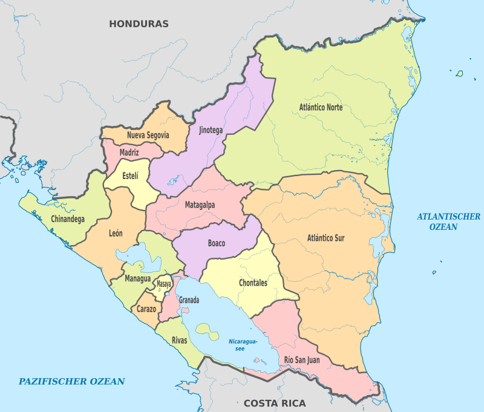
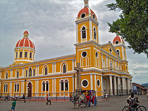

Nicaragua, oficialmente República de Nicaragua, es un país ubicado en el istmo centroamericano, la capital y ciudad política más poblada es Managua. Está compuesta por quince departamentos y dos regiones autónomas: Costa Caribe Norte y Sur, cuyas capitales son Puerto Cabezas y Bluefields, respectivamente. Se ubica en el hemisferio norte, entre la línea ecuatorial y el trópico de Cáncer, aproximadamente entre los 11° y los 15° de latitud Norte y respecto al meridiano de Greenwich, entre los 83° y los 88° de longitud Oeste.
Historia de Nicaragua
Nicaragua fue poblada a la vez por los Mayas y los Nahuas, quienes ocuparon la depresión central, y por los Miskitos (o Mosquitos), los Ramas y los Sumus, quienes se instalaron sobre la costa del mar Caribe.
Los primeros colonos españoles conducidos por Gil Gonzáles Dávila penetraron en Nicaragua hacia el año 1520 y el país fue agregado a la capitanería general de Guatemala. La dominación española permaneció sin embargo limitada en la costa pacífica.La independencia fue proclamada en 1821 y, en 1823, Nicaragua devino miembro de las Provincias Unidas de América Central, de las cuales se separó en 1838 para ser una república independiente. Ideal para la construcción de un canal que uniera el océano Pacífico y el Atlántico, la posición de Nicaragua encendió las ambiciones de los británicos, quienes establecieron un protectorado sobre la costa de los Mosquitos, entre 1841 y 1848.
Gobierno y política
Nicaragua es una república constituida por cuatro poderes: el Ejecutivo, el Legislativo, el Judicial y el Electoral. El poder ejecutivo es ejercido por el presidente, quien es elegido para un período de cinco años mediante sufragio universal. El poder legislativo está radicado en la Asamblea Nacional (unicameral), formada por 92 diputados electos por cinco años. Una Corte Suprema de Justicia integrada por 16 magistrados es la cual se encarga de vigilar el sistema judicial. Las contiendas electorales son responsabilidad del Consejo Supremo Electoral. Administrativamente, Nicaragua está dividida en 153 municipios circunscritos, en quince departamentos y dos regiones autónomas.
Organización territorial

Nicaragua se divide en 15 departamentos y 2 regiones autónomas, los departamentos hoy en día sólo tienen propósitos meramente administrativos. No tienen autoridades, ni propias ni delegadas del poder central. Los departamentos se dividen a su vez en municipios regidos por un alcalde y un concejo municipal.
En 1987, se han creado dos regiones autónomas a partir del antiguo departamento de Zelaya y la Región autónoma de la Costa Caribe Norte y Sur, las cuales son regidas por un gobernador Regional y un Concejo regional. La reforma a la Constitución Política de Nicaragua de 2014 modifica el nombre de las regiones por Costa Caribe en lugar de Costa Atlántica. Estas regiones autónomas están pobladas básicamente por poblaciones indígenas y su gobierno comunitario se rige por las normas propias de estas culturas.
Turismo
Mejores lugares turísticos de Nicaragua.
1. Granada.

Granada es un municipio y una ciudad de la República de Nicaragua, capital del departamento de Granada, también conocida como la Gran Sultana, o la París de Centroamérica.Granada es la ciudad más visitada de Nicaragua
2. San Juan del Sur
San Juan del Sur es un municipio del departamento de Rivas en la República de Nicaragua, situado sobre la costa del océano Pacífico y dista 140 Kilómetros de la capital de Managua.
Es uno de los destinos turísticos más importantes de este país centroamericano gracias a la frescura y serenidad de las aguas de su bahía, así como por las varias playas cercanas aptas para el surf
3. León Viejo
Ruinas de León Viejo, también llamado León Viejo es el lugar donde originalmente se fundó la ciudad de León ubicado en la comarca de Puerto Momotombo (puerto lacustre en el lago de Managua), municipio de La Paz Centro, departamento de León, localizado en Nicaragua, Centroamérica.
Por los constantes sismos causados por el volcán Momotombo y dificultades socio económicas, sus pobladores luego de un cabildo, decidieron abandonarla para asentarla en otro sitio cercano al pueblo indígena de Sutiaba, hoy Santiago de los Caballeros de León.
4. Reserva natural Laguna de Apoyo
La Reserva Natural Laguna de Apoyo se ubica entre los departamentos de Masaya y Granada, en Nicaragua. Fue declarada reserva natural en 1991 por el Ministerio del Ambiente y los Recursos Naturales (MARENA). Es un cuerpo de agua de origen volcánico. Tiene una superficie de 19.44 km²
Según la historia natural de Nicaragua la laguna de Apoyo se formó hace unos veintitrés mil años, después de la explosión del Volcán Pre-Apoyo que dejó el actual cráter de Apoyo. Los indígenas aprovechaban sus aguas para la pesca, y en algunos lugares cercanos a la laguna hicieron petroglifos en honor a sus dioses. La sacralidad de este espacio privilegiado está también evidenciado por la presencia de dos cementerios indígenas, aunque no hay restos de asentamiento dentro del cráter (si en las zonas exteriores).
5. Cerro Negro
El Cerro Negro es un volcán ubicado en el departamento de León, Nicaragua, a 25 kilómetros al este de la cabecera departamental del mismo nombre y tiene 726 metros de altura sobre el nivel del mar. Su nombre proviene de su color; y surgió hace un siglo y medio al ras de la llanura.
Aunque las erupciones de este y otros volcanes han sido perjudiciales para la población de sus alrededores y para el pueblo de León, la ceniza ha fertilizado la llanura leonesa en la cual se cultiva algodón, naranjas, maíz, etc.
Cultura y tradiciones
Nicaragua es producto de la herencia de las culturas nahoas, chorotegas, sutiabas, lenmichies, chibchas, afrocaribeñas y europeas (principalmente hispana), que aportaron el cultivo del arte, música, baile, alfarería, cestería y la gastronomía. La cultura nicaragüense refleja la mezcla predominante de la herencia indígena americana y española. Poco se conservó definitivamente de esta última, aunque se encuentran vestigios de la misma.
La música vernácula y autóctona nicaragüense es una de las más ricas de la región centroamericana, razón por la cual se afirma que «si México es la guitarra de América, Nicaragua es una de sus cuerdas».[cita requerida] Pueden señalarse a destacados autores y recoliadores de la misma como Camilo Zapata, Erwin Krüger, Los Bisturices Armónicos, Los Soñadores de Saraguasca, Carlos Mejía Godoy y su hermano Luis Enrique Mejía Godoy, Los de Palacagüina, Otto de la Rocha, entre otros.